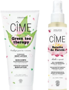
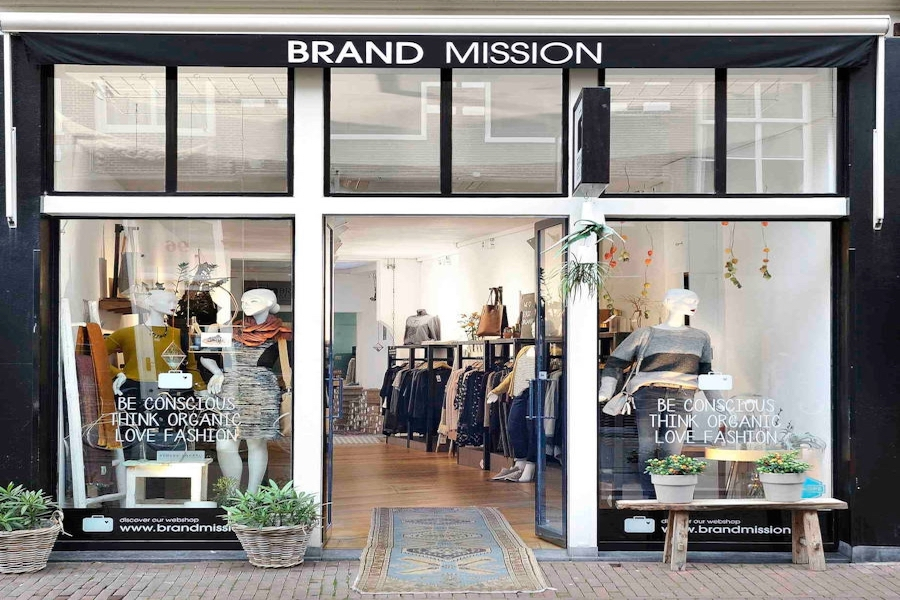

Welkom!
Hoi, welkom op inside. Inside is het blog waarop ik verschillende artikelen schrijf over de dingen die het bedrijf BrandMission doet.
Denk hierbij aan een nieuwe samenwerking tussen het bedrijf, de opening van een nieuwe winkel of belangrijk nieuws zoals een terugroepactie of aanbieding die echt niet gemist mag worden. Veel leesplezier!
Merken
Samenwerking Vela
BrandMission gaat samenwerken met Vela. En zal dit merk dus ook toe gaan voegen aan haar collectie.
Ben je nou benieuwd waarom er is gekozen voor dit merk. Klik op de button hieronder om meer te lezen!
Belangrijk
Terugroepactie Cîme
Een van de verschillende duurzame merken die BrandMission verkoopt heeft een terugroepactie afgekondigd. Het gaat om de Organic Cactus Face Wash en de Organic Aloë Body Wash van het merk Cîme.


Het Bedrijf
Winkel Amsterdam
BrandMission heeft vorige week een nieuwe winkel geopend. Deze winkel bevindt zich in het centrum can Amsterdam. De winkel is gemakkelijk te bereieken door zijn liggin op loopafstand van Centraal Station.
Het plan was er al langer. Er moest een winkel komen in Amsterdam! Het bedrijf is dan ook onzettend blij dat het eindelijk is gelukt. Kom kijken hoe BrandMission deze winkel heeft kunnen realiseren.
Merken

Laboratoires Biologie Végetale France
BrandMission is een nieuwe samenwerking aangegaan met deze Franse botanische cosmetica gigant.
Het bedrijf is een paar jaar geleden vertrokken uit Nederland maar wil op deze manier een andere manier hun producten aanbieden in Nederland dan exclusief online. Benieuwd naar wat deze samenwerking inhoud? Klik hier!